Guía para comprender la perspectiva de los estudiantes
-

Explora
Acércate a las personas involucradas para comprender su experiencia relacionada con el incidente crítico que has detectado.
-

Selecciona
Define qué instrumento utilizarás para recabar la información. ¿Entrevista o cuestionario?, ¿individual o grupal?
-
Planea
Organiza los pormenores de la etapa descubrir y comprender ¿cuándo será la aplicación del instrumento?, ¿dónde lo realizarás?, ¿cómo convocarás a los participantes?, y ¿qué recursos necesitarás?
-
Elabora
Redacta las preguntas para el cuestionario, encuesta o para la guía de entrevista. Ejemplo: guía de grupo focal.
-
Prepara
Aprovecha las herramientas digitales para crear y aplicar un cuestionario o encuesta. Por ejemplo, puedes utilizar Google Forms o Jotform para realizar y compartir tu cuestionario. También puedes realizar entrevistas por medio de Zoom, Google Meet o Jitsi Meet.
Por ejemplo: encuesta con Google Forms.
-

Aplica
Envía el enlace de tu cuestionario o encuesta a los participantes, o realiza las entrevistas o grupos focales.
-
Almacena
Guarda toda la información que has obtenido en un carpeta de tu computadora para analizarla en la siguiente fase. Si usaste Google Forms podrás descargar las respuestas para abrirlas en Excel o Google Spreadsheets.
Por ejemplo: respuestas en Google Spreadsheets
-